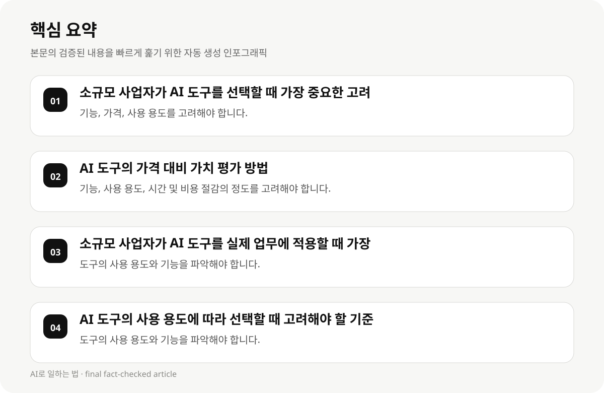

소규모 사업자가 AI 도구를 선택할 때 가장 중요한 고려 사항 #
소규모 사업자가 AI 도구를 선택할 때는 기능, 가격, 사용 용도를 고려해야 합니다. 예를 들어, 회계, 마케팅, 고객 관리 등 다양한 분야에서 사용할 수 있는 도구를 선택할 때, 실제 업무에 바로 적용할 수 있는 기능이 중요합니다.
AI 도구는 기술 지식을 전제로 하지 않아도 사용할 수 있습니다. 예를 들어, Canva는 디자인 작업을 간단하게 해주는 도구로, 소규모 사업자가 쉽게 사용할 수 있습니다.
소규모 사업자가 AI 도구를 선택할 때는 기술 지식이 부족할 수 있으므로, 도구의 사용 용도와 실제 업무에 맞는 기능을 우선시해야 합니다.
- 기능, 가격, 사용 용도를 고려해야 합니다.
- 소규모 사업자가 쉽게 사용할 수 있는 도구를 선택해야 합니다.
- 기술 지식이 부족할 수 있으므로, 실제 업무에 맞는 기능이 중요합니다.
AI 도구의 가격 대비 가치 평가 방법 #
AI 도구의 가격 대비 가치를 평가할 때는 기능, 사용 용도, 시간 및 비용 절감의 정도를 고려해야 합니다. 예를 들어, 무료 테이스를 제공하는 도구는 초기 비용이 낮지만, 장기적으로 효율성을 높일 수 있는 기능이 중요합니다.
소규모 사업자가 AI 도구를 선택할 때는 기술 지식이 부족할 수 있으므로, 도구의 사용 용도와 실제 업무에 맞는 기능을 우선시해야 합니다.
AI 도구의 가격 대비 가치 평가 시, 기능의 유용성, 사용 용도, 시간 및 비용 절감의 정도를 고려해야 합니다.
- 기능, 사용 용도, 시간 및 비용 절감의 정도를 고려해야 합니다.
- 소규모 사업자가 쉽게 사용할 수 있는 도구를 선택해야 합니다.
- AI 도구의 가격 대비 가치 평가 시 기술 지식이 부족할 수 있으므로, 실제 업무에 맞는 기능이 중요합니다.
소규모 사업자가 AI 도구를 실제 업무에 적용할 때 가장 먼저 해야 할 단계 #
소규모 사업자가 AI 도구를 실제 업무에 적용할 때는 먼저 도구의 사용 용도와 기능을 파악해야 합니다. 예를 들어, 회계, 마케팅, 고객 관리 등 다양한 분야에서 사용할 수 있는 도구를 선택해야 합니다.
AI 도구의 사용 용도를 파악한 후, 기능, 가격, 사용 용도를 고려하여 적합한 도구를 선택해야 합니다.
소규모 사업자가 AI 도구를 선택할 때는 기술 지식이 부족할 수 있으므로, 실제 업무에 맞는 기능을 우선시해야 합니다.
- 도구의 사용 용도와 기능을 파악해야 합니다.
- 기능, 가격, 사용 용도를 고려하여 적합한 도구를 선택해야 합니다.
- 소규모 사업자가 쉽게 사용할 수 있는 도구를 선택해야 합니다.

AI 도구의 사용 용도에 따라 선택할 때 고려해야 할 기준 #
AI 도구의 사용 용도에 따라 선택할 때는 기능, 가격, 사용 용도를 고려해야 합니다. 예를 들어, 회계, 마케팅, 고객 관리 등 다양한 분야에서 사용할 수 있는 도구를 선택해야 합니다.
소규모 사업자가 AI 도구를 선택할 때는 기술 지식이 부족할 수 있으므로, 실제 업무에 맞는 기능이 중요합니다.
AI 도구의 사용 용도를 파악한 후, 기능, 가격, 사용 용도를 고려하여 적합한 도구를 선택해야 합니다.
- 도구의 사용 용도와 기능을 파악해야 합니다.
- 기능, 가격, 사용 용도를 고려하여 적합한 도구를 선택해야 합니다.
- 소규모 사업자가 쉽게 사용할 수 있는 도구를 선택해야 합니다.
소규모 사업자가 AI 도구를 선택할 때 가장 큰 장애물 #
소규모 사업자가 AI 도구를 선택할 때 가장 큰 장애물은 기술 지식의 부족입니다. 예를 들어, AI 도구의 사용 용도와 기능을 파악하기 어려울 수 있으며, 실제 업무에 맞는 기능을 선택하기 어려울 수 있습니다.
AI 도구의 가격 대비 가치 평가 시 기술 지식이 부족할 수 있으므로, 실제 업무에 맞는 기능을 우선시해야 합니다.
소규모 사업자가 AI 도구를 선택할 때는 기술 지식이 부족할 수 있으므로, 실제 업무에 맞는 기능을 우선시해야 합니다.
- 기술 지식의 부족이 AI 도구 선택에 가장 큰 장애물입니다.
- AI 도구의 사용 용도와 기능을 파악하기 어려울 수 있습니다.
- 소규모 사업자가 실제 업무에 맞는 기능을 선택하기 어려울 수 있습니다.
AI 도구 선택 시의 실전 활용 방식 #
소규모 사업자가 AI 도구를 선택할 때는 먼저 도구의 사용 용도와 기능을 파악해야 합니다. 예를 들어, 회계, 마케팅, 고객 관리 등 다양한 분야에서 사용할 수 있는 도구를 선택해야 합니다.
AI 도구의 사용 용도를 파악한 후, 기능, 가격, 사용 용도를 고려하여 적합한 도구를 선택해야 합니다.
소규모 사업자가 AI 도구를 선택할 때는 기술 지식이 부족할 수 있으므로, 실제 업무에 맞는 기능을 우선시해야 합니다.
- 도구의 사용 용도와 기능을 파악해야 합니다.
- 기능, 가격, 사용 용도를 고려하여 적합한 도구를 선택해야 합니다.
- 소규모 사업자가 쉽게 사용할 수 있는 도구를 선택해야 합니다.
AI 도구 선택 시의 실전 활용 단계 #
소규모 사업자가 AI 도구를 선택할 때는 먼저 도구의 사용 용도와 기능을 파악해야 합니다. 예를 들어, 회계, 마케팅, 고객 관리 등 다양한 분야에서 사용할 수 있는 도구를 선택해야 합니다.
AI 도구의 사용 용도를 파악한 후, 기능, 가격, 사용 용도를 고려하여 적합한 도구를 선택해야 합니다.
소규모 사업자가 AI 도구를 선택할 때는 기술 지식이 부족할 수 있으므로, 실제 업무에 맞는 기능을 우선시해야 합니다.
- 도구의 사용 용도와 기능을 파악해야 합니다.
- 기능, 가격, 사용 용도를 고려하여 적합한 도구를 선택해야 합니다.
- 소규모 사업자가 쉽게 사용할 수 있는 도구를 선택해야 합니다.
AI 도구 선택 시의 실전 활용 전략 #
소규모 사업자가 AI 도구를 선택할 때는 먼저 도구의 사용 용도와 기능을 파악해야 합니다. 예를 들어, 회계, 마케팅, 고객 관리 등 다양한 분야에서 사용할 수 있는 도구를 선택해야 합니다.
AI 도구의 사용 용도를 파악한 후, 기능, 가격, 사용 용도를 고려하여 적합한 도구를 선택해야 합니다.
소규모 사업자가 AI 도구를 선택할 때는 기술 지식이 부족할 수 있으므로, 실제 업무에 맞는 기능을 우선시해야 합니다.
- 도구의 사용 용도와 기능을 파악해야 합니다.
- 기능, 가격, 사용 용도를 고려하여 적합한 도구를 선택해야 합니다.
- 소규모 사업자가 쉽게 사용할 수 있는 도구를 선택해야 합니다.